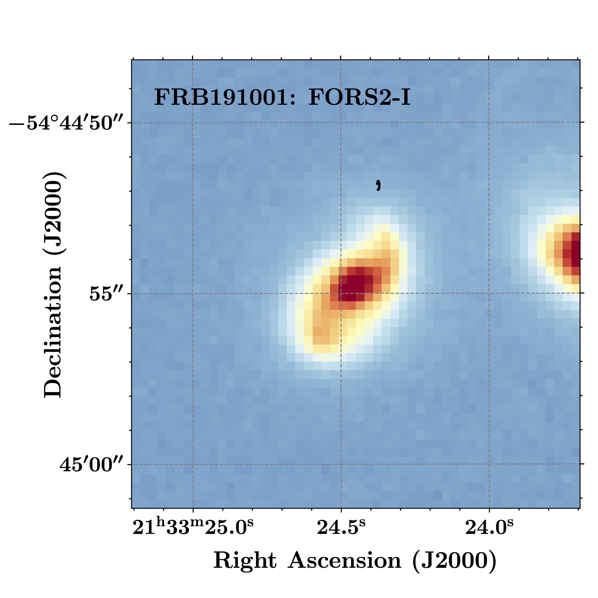

FRB 191001
Image from Heintz et al. (2020)
Summary
- Detected by: ASKAP-ICS
- FRB coordinates (RA, Dec): 21:33:24.37 -54:44:51.9 (J2000)
- Host coordinates (RA, Dec): 21:33:24.44 -54:44:54.7 (J2000)
- Redshift: 0.2340
- Observed DM: 507.9 pc cm-3
- Repeating: No
- References: Bhandari et al., 2020 (arXiv: 2008.12488);
Heintz et al. (2020)
Host galaxy properties
| Quantity | Measured value | Unit |
|---|---|---|
| Stellar mass | (4.64 ± 1.88) × 1010 | M⊙ |
| Star-formation rate | 8.06 ± 2.42 | M⊙/yr |
| Metallicity | 8.94 ± 0.05 | 12+log(O/H) |
| E(B-V) | 0.27 ± 0.16 | mag |
| Mass-weighted age | 639.7 | kpc |
| Absolute r-band mag. | -22.13 ± 0.05 | mag |
| u - r color (rest-frame) | 1.67 ± 0.19 | mag |
| Half-light radius | 5.55 ± 0.03 | kpc |
| FRB offset from galaxy center | 11.0 ± 0.5 | kpc |
Emission line fluxes
| Emission line | Measured value |
|---|---|
| Hα | 27.4 ± 0.3 |
| Hβ | 5.01 ± 0.30 |
| [OIII] λ 5007 | 3.62 ± 0.35 |
| [NII] λ 6584 | 13.9 ± 0.2 |
Photometry
| Telescope | Filter (eff. wavelength) | Magnitude |
|---|---|---|
| DES | g (527 nm) | 19.12 ± 0.01 |
| DES | r (659 nm) | 18.34 ± 0.01 |
| DES | i (789 nm) | 17.91 ± 0.01 |
| DES | z (976 nm) | 17.74 ± 0.01 |
| DES | Y (1003 nm) | 17.63 ± 0.01 |
| VLT/FORS2 | g (470 nm) | 18.89 ± 0.10 |
| VLT/FORS2 | I (768 nm) | 17.84 ± 0.10 |